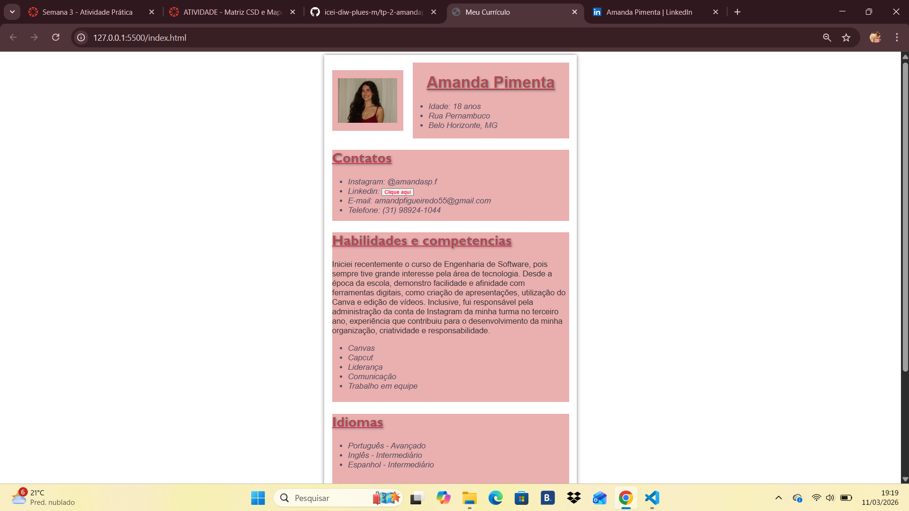

Iniciei recentemente o curso de Engenharia de Software, pois sempre tive grande interesse pela área de tecnologia. Desde a época da escola, demonstro facilidade e afinidade com ferramentas digitais, como criação de apresentações, utilização do Canva e edição de vídeos. Inclusive, fui responsável pela administração da conta de Instagram da minha turma no terceiro ano, experiência que contribuiu para o desenvolvimento da minha organização, criatividade e responsabilidade.